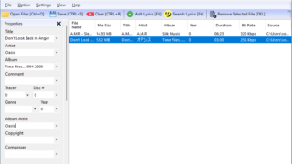

A simple audio file tag editor for Windows

A simple audio file tag editing tool for Windows that supports MP3, FLAC, OGG, OPUS, AAC, M4A, WMA, APE, WV, WAV and AIFF audio files.
SoundTag Overview
SoundTag is a simple audio file tag editing tool.
SoundTag Features
These are the main features of SoundTag.
| function |
overview |
| Main Features |
Editing tags for an audio file |
| Function details |
Edit tag information of audio files. |
You can edit the tag information of audio files.
SoundTag is a simple audio file tag editing tool for Windows that supports MP3, FLAC, OGG, OPUS, AAC, M4A, WMA, APE, WV, WAV and AIFF audio files .
SoundTag allows you to edit or add information about your audio files, such as song title, artist name, album name, track number, genre, release year, copyright owner, composer, and cover art.
You can also search and add lyrics
SoundTag is easy to use: just add the audio files you want to tag or edit, then you can manually edit the tag information. Also, if your music files don't contain lyrics, you can use SoundTag to find and add lyrics.
SoundTag also supports keyboard shortcuts, allowing you to edit tags efficiently and quickly.
A simple tag editor tool
SoundTag is a simple audio file tag editor that supports a wide range of file formats. It does not have advanced features such as automatic tagging, so it is suitable for people who want to manually edit file tag information.
|